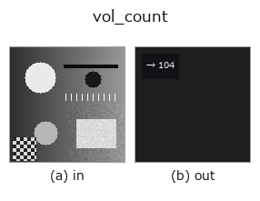

features op• Data kinds: volume → feature
• Call: fullseye.apply(img, "vol_count", a=0.5, b=0.5) (the 2-D model is one image plus two scalar knobs a,b∈[0,1])

*The figure is the actual output on a synthetic 128×128 input. Left: input, right: output. Point clouds are drawn as a top-down scatter (brightness = z), 1-D series as a line plot, volumes as the maximum-intensity projection along z, videos as the middle frame, complex images as magnitude; return values that are not pictures are shown as the values themselves.*
*Knob a does not change the output (measured: identical at 0.1 / 0.5 / 0.9).*
*Knob b does not change the output (measured: identical at 0.1 / 0.5 / 0.9).*
Stages (the ops that come before → this op, left to right):
▸ vol_count: stages (docs site)
A feature that returns the number of connected components (blobs) in a 3D volume. No corresponding HALCON op is specified.
> The detailed description below is the original text — the summary and the headings are translated.
`a, b は未使用。しきい値は 0.5 に固定（v > 0.5 で二値化してから scipy.ndimage.label）。連結性は scipy の既定構造要素（面で接する 6 近傍相当）で、稜・頂点だけで接する（26 近傍でしか繋がらない）ボクセルは別ブロブとして数えられる——2-D の _blob_count` が HALCON パリティのため 8 連結を明示指定しているのとは対照的に、こちらは既定のまま連結性を明示していない。
• gallery2d_features family guide
• Sample-data catalog (download URLs / licences) — 2-D uses skimage.data (BSD/public domain) plus synthetic images; 3-D lists download URLs for real data sources (Stanford, PDS, …).
• Operator provenance and references — the sources of the research/methods this op family came from.
• The canonical algorithm (author, year) and its uses are named in the family usage guide above.
The program below has been verified to run (same input as the figure). In Studio's help this block becomes buttons that load and run it on the spot.
img_to_volume 0.50 0.50 vol_count 0.50 0.50
▸ Load this pipeline · Load & run
• gallery2d_features — py -3.11 examples/gallery2d_features.py
feature as input)features)blob_count · area_frac · count_contours · total_length · sk_euler · sk_entropy_feat · sk_blur_effect · cv_cc_count
*Provenance: ops.py — 2D operator registry. This per-op note is generated by tools/opdocs.py md (do not hand-edit).*
© 2026 Kazufumi Furuse — Fullseye operator documentation. Licensed under Apache-2.0.
{kind=link}